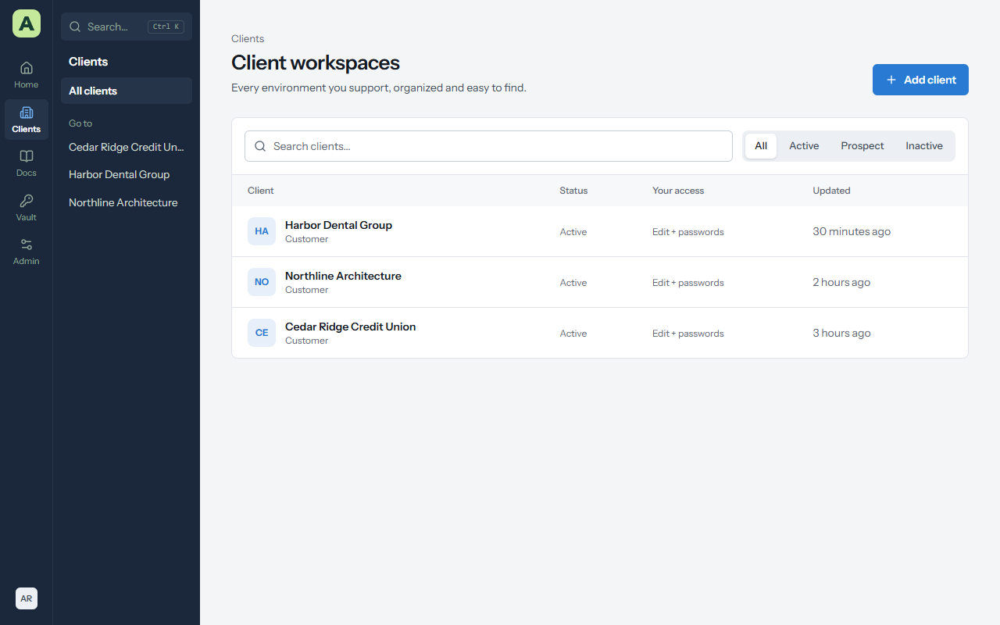
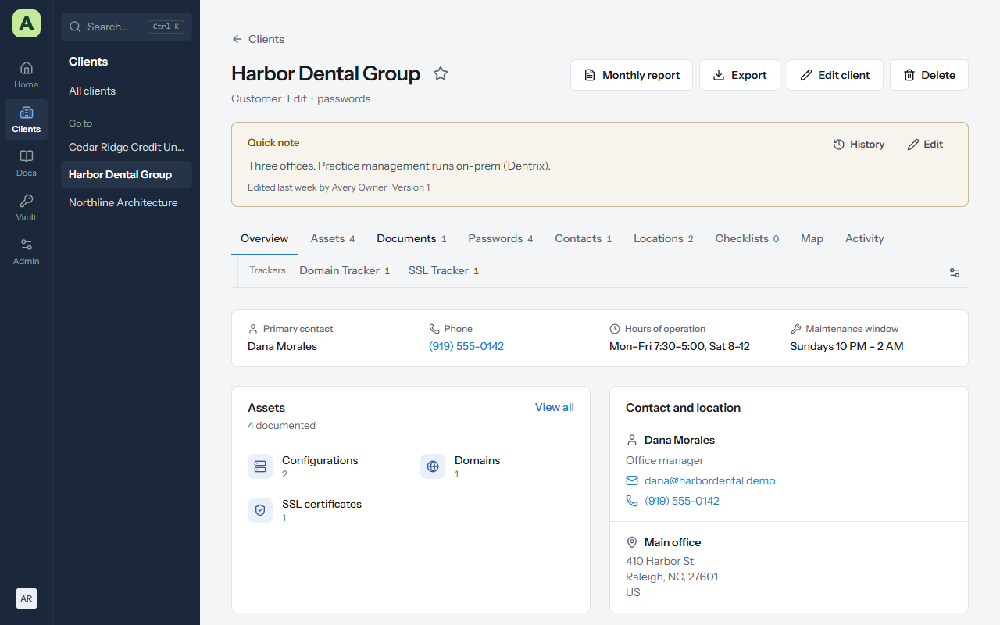
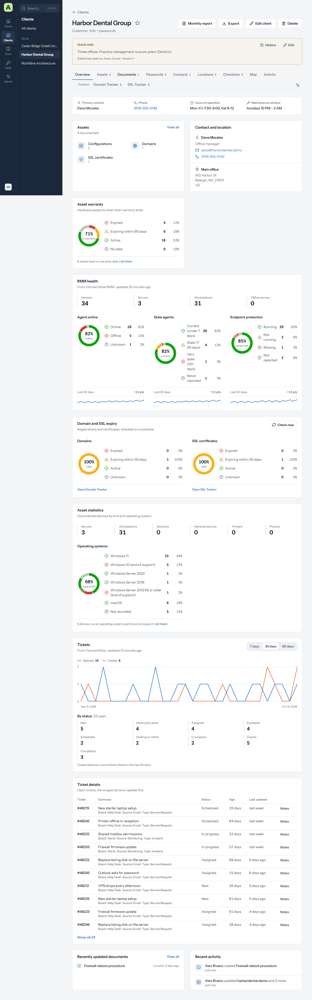
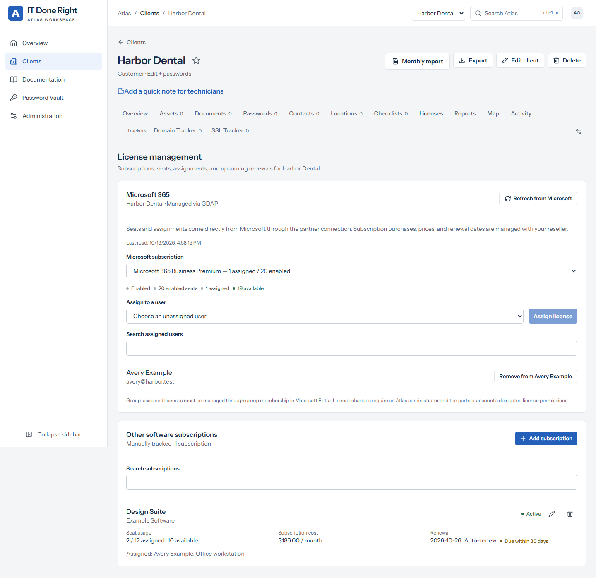
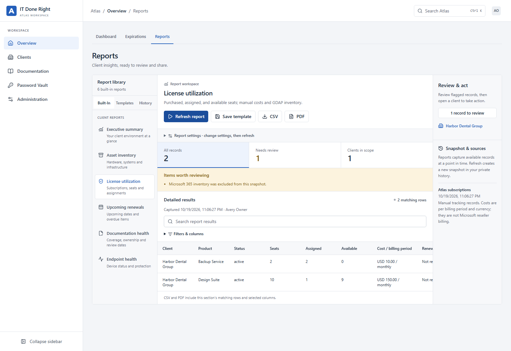

Chapter 3
Clients
Every organization you support is a client in Atlas, with its own workspace. This chapter covers finding a client, what its workspace shows, and the everyday changes you make to it.
The client list


Clients → All clients lists every client you can open, with its status, your access, and when it last changed. Type in Search clients to filter, or choose All, Active, Prospect or Inactive.
In the rail menu style, the Go to list in the Clients panel jumps straight to any client.
Add a client
You need edit access to every client to add one. Administrators always have it.
- Choose Add client on the client list.
- Enter the Client name, and choose its Type and Status.
- Optionally fill in Hours of operation and Maintenance window. They show on the client's overview, where technicians look before scheduling work.
- Tick Require a reason to view passwords if this client wants every password reveal explained. See Passwords.
- Choose Save.
A client's workspace


Opening a client shows:
- The header: the client's name and type, your access, the star to add it to your favourites, and for staff the client's health score (see Client health). Monthly report, Review pack, Export, Edit client, and for administrators Delete, are on the right. Review pack downloads this client's quarterly business review as one PDF (see Client review pack).
- The quick note: a short note at the top of every page for this client, for the thing everyone should know before they touch anything.
- The tabs: Overview, Assets, Documents, Passwords, Contacts, Locations, Checklists, Licenses, Map and Activity. Counts appear for the sections that provide them. The Trackers row underneath has Domain Tracker and SSL Tracker. A tracker count turns amber when something needs attention.
Hide tabs you don't use
Choose Choose which sections show (the sliders at the right of the tabs) and untick the sections you don't need. This only changes your own view; other people still see every tab.
Client health
Every client has a health score from 0 to 100, beside its name, with a word for how it's doing:
- Healthy: 90 and over.
- Good: 75 to 89.
- Needs attention: 60 to 74.
- At risk: under 60.
An arrow shows how far it has moved in the last 30 days.
The score is made of four parts, weighted by how much they matter:
| Part | Weight | What it measures |
|---|---|---|
| Security | 30% | Passwords without issues, endpoint protection running, and disks encrypted (where the BitLocker collector reports). |
| Endpoints | 25% | Devices online, and devices that checked in with the RMM on time. |
| Documentation | 25% | A primary contact, a location, assets, and documents on record, and documents reviewed by their review date. |
| Renewals | 20% | Domains, SSL certificates, warranties and subscriptions in date. An expired item counts fully against it; one due soon counts half. |
A part with nothing to measure, such as a client with no RMM devices, is left out and the others count for more. It is never assumed to be healthy.
Choose the score to see each part and What would raise it most: each thing pulling the score down, with how many points fixing it would add, linked to where you fix it.
Atlas works the scores out every hour with the owner's view, so everyone on staff sees the same number. It keeps one score per client per day, for the trend. Scores are for staff only; client accounts don't see them.
The dashboard's Client health card lists every client you can open, lowest first, with its trend; Customize moves or hides it. The client list has a Health column. The Executive summary report includes each client's score and its parts, and the Client review pack shows the score on its cover.
The overview
The overview is the client at a glance. Scroll down for the detail.
| Part | What it shows |
|---|---|
| Facts | Primary contact, phone, hours of operation and maintenance window. |
| Assets | How many assets the client has in each layout. Choose one to open the list. |
| Contact and location | The primary contact's details and the primary location's address. |
| Asset warranty | Hardware by when its warranty ends: expired, ending soon, active, unknown. |
| RMM health | From ConnectWise RMM: devices online, stale agents, and endpoint protection. |
| Security and compliance | From ConnectWise: patch compliance, backup and DR readiness, vulnerabilities and MDR incidents. A part the client doesn't use says Not available. |
| Domain and SSL expiry | What is expired or expiring among the client's domains and certificates. |
| Asset statistics | Servers, workstations, network devices, printers and phones, and a chart of operating systems that marks the ones out of support. |
| Tickets and Ticket details | Tickets opened and closed per day, and the open tickets that have gone longest without an update. |
| Installed software | Applications reported by ConnectWise RMM across the client's devices. |
| Recently updated documents and Recent activity | What changed lately, and who changed it. Several changes in a row by one person show as one line. |
Cards that rely on ConnectWise only appear once the client is linked to a ConnectWise company. Chapter 6, Monitoring and alerts, explains each card in detail.


Quick notes
The quick note is for one or two lines everyone must see: "Practice management runs on-prem, never reboot the server before 6 PM", or "New firewall going in next week."
- Choose Edit on the note to change it.
- History shows every earlier version, lets you compare two, and restore one.
Contacts and locations
The Contacts and Locations tabs list the people and sites for this client.
- Add contact or Add location opens a form. Tick Primary contact or Primary location to show it on the overview.
- A contact's email and phone numbers are links, so you can call or write from the page.
- Link a contact or location to the assets and documents it relates to from the item's Related section. See Documentation.
The relationship map
The Map tab draws how the client's assets, passwords, documents, contacts and locations link together, with the same links as a list below for keyboard and screen-reader use. It's built from the links you make under Related on each item.
Licenses and subscriptions


Open Licenses to track software subscriptions, purchased seats, assigned people or devices, per-seat costs, billing cycles, and renewal dates. Choose Add subscription, enter one assignment per line, and save. Assignment counts cannot exceed purchased seats. Renewals within 30 days and past renewal dates receive a badge; this page does not send renewal emails. Keep activation keys and passwords in the vault.
For linked Microsoft 365 tenants, Microsoft 365 reads subscriptions, seat availability, and users through the saved GDAP partner connection. Choose a subscription to inspect assignments. Atlas administrators can assign an available license to a user or remove a direct assignment after confirming the named user and product. Group-assigned licenses must be changed through Microsoft Entra group membership. Microsoft consent and the partner user's customer roles also apply; see Data and integrations.
Microsoft seat counts and assignments remain authoritative in Microsoft. Purchases, reseller pricing, billing terms, and renewal dates are managed with your reseller. Other software subscriptions tracks other purchases manually and does not change vendor subscriptions. Read-only client access can view records; editing manual tracking requires client edit access. Manual changes appear in client activity and client exports.
Reports


Open Overview → Reports for reporting across clients, or a client's Reports tab for that workspace. The built-in reports are:
- Client review pack
- Executive summary
- Security posture
- Cyber insurance readiness
- Service review
- Asset inventory
- License utilization
- Savings finder
- Upcoming renewals
- Domains & SSL
- Documentation health
- Endpoint health
- Software & sign-ins
- Microsoft 365 accounts
- Microsoft 365 usage
Choose a report and up to 25 clients, set the report title and any lookahead, and choose Run report.
The report captures current records; it does not infer historical activity or missing health data. Source timestamps and coverage notices explain what was available. Microsoft seat inventory is read only through the linked GDAP connection. Microsoft reseller costs and renewal dates are not supplied by that inventory.
A report opens with its figures across the top, then every section of it, one after another. Press Needs review (or tick Needs review only) to show just the flagged rows, and use the search box to search the whole report. Each section's CSV exports its matching rows, up to the 10,000-row generation limit; PDF exports the whole report, with capture details and data coverage. The page shows the first 500 rows of a section; the CSV has them all.
Save template stores reusable settings privately in your account. Templates lets you load, update, copy, or delete those settings. History lists your recent snapshots; opening a snapshot preserves its original contents, while Refresh report creates a new capture. Every view and download checks current access to all included clients. Deleting a client removes any report or template containing that client. Report generation, template changes, exports, and deletions appear in the security log.
Security posture shows, for each client, passwords with problems (breached, weak, reused, overdue, expired, or unchanged for a year), devices that are offline or unprotected, BitLocker encryption reported by the collector, and the last result of automatic password rotation. Password names appear only for clients whose passwords you can open, and only administrators see rotation. Passwords, usernames, notes, and recovery keys are never included.
Savings finder shows what each client pays for and doesn't use, priced per month:
- Unused seats: seats bought but not assigned. A subscription tracked under Licenses counts only when its assignments are recorded, so nothing is guessed; a notice lists the ones without assignments.
- Licenses on blocked accounts: Microsoft 365 licenses held by accounts whose sign-in is blocked, usually people who have left. Remove the licenses, or convert the mailbox to a shared mailbox, which needs no license under 50 GB.
- Renewals: tracked subscriptions renewing within the window you choose, with what each renewal costs, how many seats go unused, and what cutting them saves before it renews.
The summary totals each client's monthly and yearly waste, in each currency separately. Microsoft 365 seats come live through GDAP (choose Include Microsoft 365 inventory through GDAP). GDAP doesn't give prices, so a Microsoft seat is priced from a tracked subscription of the same name when you have one. Otherwise it's estimated at Microsoft's published list price in US dollars, marked "(list)", and products Atlas has no price for show as "Not priced". A product Microsoft reports is counted from Microsoft's live assignments, never twice.
Microsoft 365 accounts lists every account in each client's linked tenant: enabled or blocked, member or guest, how many licenses it holds, and its usage location. Blocked accounts that still hold licenses, and licensed accounts with no usage location, are flagged.
Microsoft 365 usage shows who uses Microsoft 365 and how, over the last 30 to 180 days (Microsoft keeps 180): each licensed account's last activity in email, Teams, OneDrive and SharePoint, flagging accounts with none, then a section each for Exchange email, Teams, OneDrive, SharePoint and the Microsoft 365 apps. It reads Microsoft's usage reports, which need the Reports.Read.All permission and a GDAP role that can read reports (see Microsoft 365 with GDAP in the administrator's guide). If a tenant hides names in its reports, the report says how to show them.
Cyber insurance readiness answers the questions cyber insurers ask, for each client, from what Atlas holds. Each answer is Yes, Partly, No or Not evidenced, with the evidence and where it came from:
| Question | Answered from |
|---|---|
| MFA for email and remote access | Not tracked in Atlas: confirm it in Microsoft Entra |
| Endpoint protection on every device | ConnectWise RMM |
| Laptops and workstations encrypted | The BitLocker collector |
| Operating systems still supported | Device operating systems on assets |
| Devices managed and up to date | RMM check-ins (patch levels are in the RMM) |
| Backups in place and restore-tested in 12 months | Backups assets and their Last restore test |
| Administrator accounts limited | Global Administrators of the synced Microsoft 365 tenant (fewer than five) |
| Local administrator passwords rotated | Automatic password rotation (administrators only) |
| Stored passwords free of breaches and reuse | Password health |
| Email protected against spoofing | Each Domains asset's DMARC record, looked up when the report runs, and the filtering service on Email assets |
| Incident response plan | A document titled as one |
| Business continuity or disaster recovery plan | A document titled as one |
| Security awareness training | Not tracked in Atlas |
Readiness summary gives each client's readiness: Yes counts fully and Partly half, out of the questions Atlas could answer. Gaps to close before renewal lists every answer that isn't Yes, refusals first, each with what to do. Not evidenced means Atlas holds no proof either way, so answer it from your own records rather than as a Yes. A DMARC lookup that fails is a notice, never "no record". Domains & SSL lists each client's domains and SSL certificates with their registrar or issuer, expiry date, days left, and the result of the latest automatic check, soonest first. A summary counts what has expired, what expires within the chosen window, and failed checks. Records the trackers haven't checked yet show the dates as entered. Software & sign-ins reads the inventory the ConnectWise RMM sync saves. It lists every application installed on each client's devices, with versions, how many devices have it, and the same flags as the client's Software tab: end of life, no license recorded, or more installs than licensed seats. It also lists the accounts that sign in to each device, with the matching contact. Devices that haven't reported an inventory are counted in the report's notices rather than treated as having nothing installed. Service review looks back over a period you choose (the last 30 days to a year): tickets opened and closed, tickets still open, checklists completed, documentation updated, assets added, and every change recorded in Atlas, with each client's device health at the start of the period against now. It suits a monthly or quarterly review with the client. Password changes are counted only for clients whose passwords you can open, and are never listed. For Asset inventory, Asset fields adds up to 12 fields from your asset layouts as extra columns, such as serial number, model, warranty date, or IP address. Long text fields are never included, because they often hold notes and configuration. A field removed from its layout since a template was saved is left out, with a notice. PDF exports carry your organization's look from Administration → Theme: the logo (PNG or JPEG; an SVG logo shows your brand name instead), the brand name, and the accent colour. The first page summarizes the report: how many clients and rows it covers, how many rows need review, and any notices. It also charts what needs review in each section, the spread of status columns (online, protection, encryption, status), and due or expiry dates by month. When you have run the same report for the same clients before, Compare with shows what changed since the most recent earlier run. New rows are marked New, changed values are highlighted with the previous value beneath, and rows that have gone are listed under removed since. Changes only hides everything else. Values that move on every run, such as check-in times or days left, don't count as changes.
Client review pack
The Client review pack is a business review for one client in a single PDF, ready to send before a quarterly meeting. It is made of four reports, run together: Executive summary, Security posture, Service review and Upcoming renewals. Its period looks back for the service review and ahead for renewals: a quarter by default, or anything from 30 days to a year.
The fastest way to make one is Review pack in the client's header: it captures the last quarter and downloads the PDF in one click. You can also choose Client review pack under Reports, pick the client and period, and choose Run report, then Review pack PDF.
The PDF opens with a cover page in your organization's look. It shows the client, the period, how much of each report needs review, and the contents with page numbers. Each report follows on its own pages, with its charts, and one-client summaries shown as figures rather than a one-row table. On screen, Report section groups the sections under the report each belongs to.
The pack leaves out Atlas's internal change log; the service review still counts the changes made. Like any single-client report, a review pack can be compared with the last one, shared with the client by link (the client can download all of it as one PDF), or scheduled, for example every quarter on the 1st.
Scheduled reports
To have a report emailed regularly, set it up (report type, clients, and any options), then choose Schedule. Choose:
- how often it runs: every day, week, month, or quarter (quarters start in January, April, July, and October);
- the day and the hour, in the server's time zone;
- who receives it: up to 20 addresses, staff or client contacts.
Each time it runs, Atlas captures a fresh snapshot with your access at that moment and keeps it in your History, so Compare with works on it. Then it emails each recipient a summary, with the whole report attached as a PDF in your organization's look. For a report about one client, it can also include a 30-day link the client can open without an account.
The Scheduled tab lists your schedules, when each runs next, and how the last delivery went, including any addresses that refused it. Deliveries lists every email a schedule sent or tried to send, recipient by recipient, with the reason any was refused. Send one again to its recipient with the resend button: it sends the same snapshot, without running the report again, while that snapshot is still in your history. Send now sends one straight away without moving its regular time. Pause stops it until you resume it. Schedules are private to the person who made them. A schedule stops if its owner can no longer sign in, and deleting a client removes the schedules that report on it. Email must be set up under Administration → Email & alerts.
Sharing a report with the client
A report run for a single client can be shared with that client by link. Choose Share, pick how long the link works (7, 30, or 90 days; report links always expire), and choose Create link; the link is copied for you. Whoever has the link sees that snapshot, every section as it was captured, and can download the whole report or one section as a PDF, without an account. The page names your organization and the client, never the person who ran the report. The dialog shows how often each link was opened, and Revoke stops a link at once. Deleting the report or the client stops its links too. Only the person who ran the report can share it, and only with edit access to the client. Making and revoking links appear in the security log.
Send decides which runs are emailed, so a schedule can work as an alert:
- Every time sends every run.
- Only when something needs review sends only runs with flagged rows.
- Only when something new needs review sends only when something needs review that didn't in the last report sent. That email lists just the new items.
For example, Security posture, every day, only when something new needs review, tells you the morning after a password turns up in a breach or a device loses its protection, and stays quiet otherwise. Domains & SSL set up the same way warns as each certificate or domain starts to expire. Runs that send nothing aren't kept in your history, and the schedule shows Nothing to send. Send now always sends.
The monthly report
Monthly report in the client header opens a printable page with the client's assets and documents. Use your browser's Print, and choose Save as PDF to send it to the client.
Export a client
Export downloads a zip of everything you can see for the client:
-
client.json, with the client, contacts, locations, assets and their fields, documents, manually tracked subscriptions, and links. - The documents as plain text.
- The attached files.
Administrators can tick Include decrypted passwords. Atlas asks for your password again first, and every password exported is logged. Keep such an export encrypted, and delete it when you're done.
Change or delete a client
- Edit client changes the name, type, status, hours, maintenance window and the reason requirement.
- Delete (administrators only) removes the client and everything in it. You must type the client's name exactly. The deletion is recorded in the security log. It can't be undone except by restoring a backup.